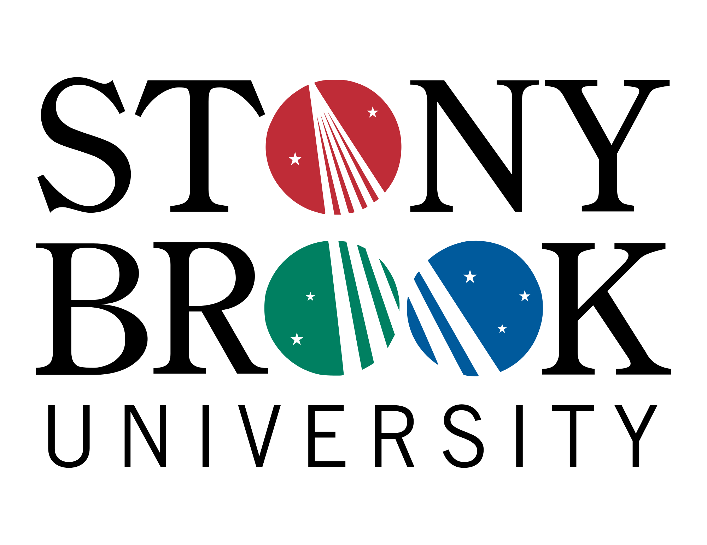

Experiment on class-conditioned DCGAN
A mini project which uses DCGAN (deep convolutional GAN) as the base architecture, then adding class-conditioned context information to control image randomness.
Welcome to my playground, feel free to play around!!!
I am an MS student who has just graduated from New York University. My career interest is data science, anything includes but is not limited to: machine learning, deep learning and big data. You can find my resume in the following link.

A mini project which uses DCGAN (deep convolutional GAN) as the base architecture, then adding class-conditioned context information to control image randomness.

A mini project which explores the usage of semi-supervised learning on the MNIST hand-written data set. The semi-supervised method is called psudo-label. This method helps in using more unlabeled data in training which also gives a slightly boost to the model accuracy.

The real estate market is a very interesting area in economy. Usually a high market value indicates a more prosperous region. In this project, we focused our study on Manhattan, NY using the PLUTO (Primary Land Use Tax Lot Output) and the Rolling Sales data from the NYC Department of Finance. Our goal was to find how a newly introduced business has influence on the real estate values in its neighboring region. At the same time we used machine learning techniques to discover the most significant features or attributes under our model settings.

One of the major purposes of Internet is that people can use search engines to look up answers to their questions. In this project, we implemented a simple question answering system by applying multi-class prediction on the Yahoo!Answers dataset. For a simple and manageable approach, we decided to use only the top four frequently asked categories in the dataset. Then we trained a set of different multi-class models for the task.


